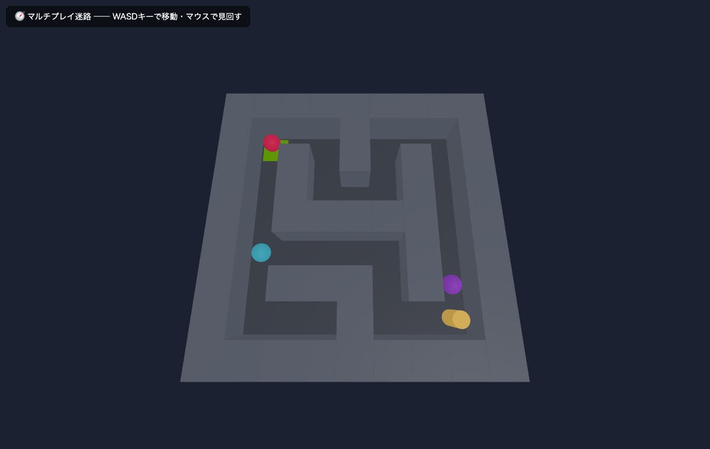
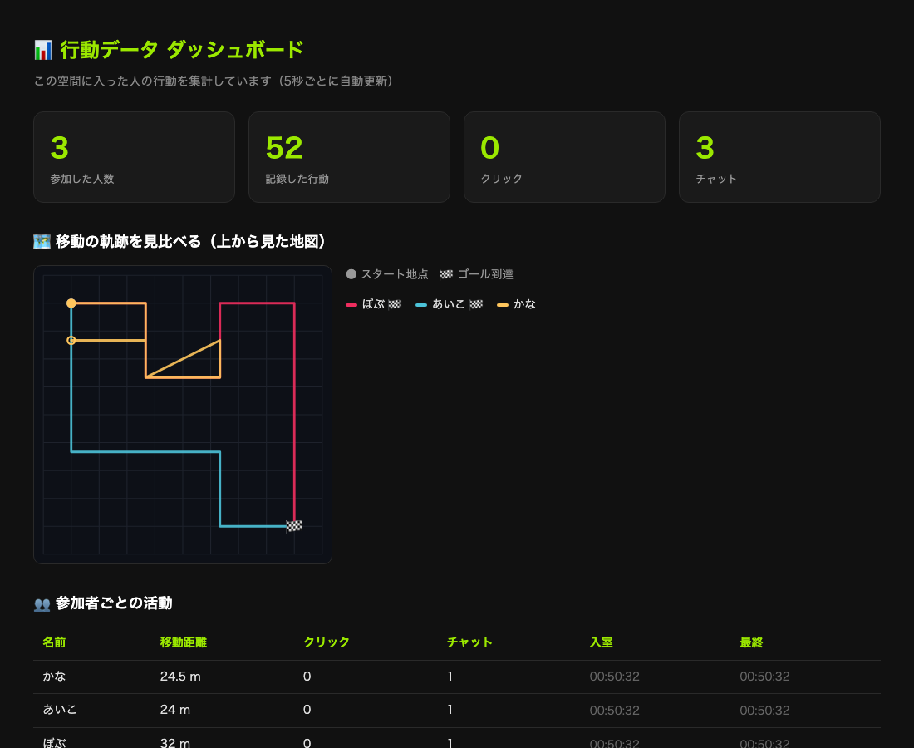

マルチプレイ空間 ＋ 行動データ記録（ダッシュボードは任意）
第14回・第15回は作品づくりの時間です。この回に提出する課題はありません。
まずマルチプレイ空間と行動データ記録の実装を進めましょう（ダッシュボードは任意）。
完成した制作物は第15回に提出します（第15回はクラスメイトに入ってもらう「データ取得会」＋発表）。
今回から最終制作に入ります。作るのは「みんなで入れる自由な3D空間」です。
ただの空間ではありません。空間に入った人の行動データ（動き・クリック・チャットなど）を記録する
ところまでを必須で作ります。記録したデータをダッシュボードで見える化する部分は任意です。
第14回で空間とデータ記録を実装し、第15回でクラスメイトに入ってもらってデータを集めます。
まず「何を作るか」を確認してから実装に取りかかりましょう。
第10回のアバタ同期、第11〜13回の Socket.IO・SQLite・データ永続化 ── これまで学んだ技術を 1つのアプリに組み合わせるのが最終制作です。空間の見た目やオブジェクトは自由に作ってかまいません。
Web14/ フォルダに、この3要素をすべて満たす
動作する参考実装を用意しました。まずこれを起動して動きを体感し、
そこから自分の空間へコピー＆改造して進めるのが最短ルートです（丸写しではなく、必ず自分で改造すること）。
読み方: requirement = リクワイアメント（「要件」「必須条件」の意。 require「必要とする」＋ -ment「名詞化」）。
派生語の MVP＝エムブイピー（Minimum Viable Product = 最小限の動作する製品）、use case＝ユースケース（システムの利用シーン）、architecture＝アーキテクチャ（ギリシャ語 arkhi-「主要な」＋ tekton「建築家」= システム全体の構造設計）。
最終制作では、これまで学んだ技術を組み合わせてマルチユーザ3D Webアプリケーションを作ります。
使用技術（必須）
| 技術 | 用途 | 学んだ回 |
|---|---|---|
| A-Frame 1.7.1 | 3D空間の構築 | 第4〜8回 |
| Node.js + Express | サーバの構築 | 第2〜3回 |
| Socket.IO | リアルタイム通信 | 第9〜12回 |
基本機能（必須） 設計課題に含む
| # | 機能 | 説明 |
|---|---|---|
| 1 | マルチプレイ（アバター同期） | 複数のブラウザからアクセスし、各ユーザのアバターが3D空間内に表示される。位置・回転がリアルタイムに同期される。 |
| 2 | 吹き出しチャット | 3D空間内でテキストメッセージを送信でき、アバターの上に吹き出しとして表示される。 |
自由要素（個性を出す部分）
💡 具体例 ── 要件の優先順位
例えば「マルチプレイ迷路」を作る場合、優先順位は次の通り:
→ 「やりたい順」ではなく「無いと困る順」で並べると、途中で時間切れになっても最低限動くアプリが残る。
以下の5ステップで設計を進めます。
| ステップ | 内容 | ポイント |
|---|---|---|
| 1. テーマ決定 | 「どんな3D空間を作るか」を決める | 自分が興味を持てるテーマを選ぶ。作りたいもののイメージを言葉にする。 |
| 2. 機能一覧 | 必須機能 + 任意機能をリスト化する | 必須の2機能を先に書き、任意で作る機能を優先順位付けする。 |
| 3. 画面設計 | 3D空間のレイアウトをスケッチする | 手描きでOK。どこに何を配置するか、UIはどこに置くかを決める。 |
| 4. 技術選定 | 各機能をどの技術で実現するか整理する | 過去の回で学んだ技術を振り返り、該当する技術を選ぶ。 |
| 5. ファイル構成 | プロジェクトのフォルダ・ファイル構成を決める | server.js / index.html / style.css など、必要なファイルを洗い出す。 |
設計時に「どの技術を使えばよいか」を判断するための振り返り表です。
| 回 | テーマ | 学んだ技術・キーワード | 最終制作での活用例 |
|---|---|---|---|
| 1 | 全体構造の整理 | クライアント・サーバ、HTTP、A-Frame基礎 | 全体設計の基盤 |
| 2 | サーバサイド基礎 | Node.js、Express、ルーティング | サーバの構築 |
| 3 | クライアント-サーバ通信 | JSON、fetch、APIエンドポイント | データの送受信 |
| 4 | 3D表現入門 | A-Frame、エンティティ、コンポーネント、座標系 | 3D空間の構築 |
| 5 | 3D表現① | カラー、マテリアル、テクスチャ | オブジェクトの見た目 |
| 6 | 3D表現② | ライティング、影、カメラ | 雰囲気・演出 |
| 7 | 3D表現③ | アニメーション、動き | 動的な表現 |
| 8 | 3Dアセット活用 | glTFモデルの読み込み | 3Dモデルの配置 |
| 9 | リアルタイム① | Socket.IO、双方向通信、チャット | チャット機能 |
| 10 | リアルタイム② | アバター位置・回転の同期 | マルチプレイ |
| 11 | リアルタイム③ | イベント・アニメーション同期 | インタラクション同期 |
| 12 | リアルタイム④ | JSON、position/rotation/idのデータ構造 | アバターデータの整理 |
| 13 | リアルタイム⑤ | SQLite、データ永続化 | チャット履歴・状態保存 |
以下は「マルチプレイ迷路」をテーマにした設計例です。自分の設計の参考にしてください。
設計例: マルチプレイ迷路
テーマ: スタートからゴールを目指す3D迷路。複数人が同時に入って挑戦し、「誰がどの道を通ったか・誰が速くゴールしたか」を記録して見比べる。

Web14/public/maze.html
機能一覧:
| 区分 | 機能 | 使用技術 |
|---|---|---|
| 必須 | マルチプレイ（プレイヤーのアバター同期） | Socket.IO + A-Frame |
| 必須 | 行動記録（経路・ゴール到達を保存） | SQLite + better-sqlite3 |
| 任意 | ダッシュボード（軌跡・ゴール率の集計） | REST API + fetch |
| 任意 | チャット（迷路内で声を掛け合う） | Socket.IO |
| 任意 | クリアタイムの計測・ランキング | 入室〜ゴールの時間差 |
| 任意 | 迷路の形をランダム生成・難易度切替 | JavaScript |
ファイル構成:
ファイル構成 Web14/ server.js ← Express + Socket.IO + 行動記録 + REST API db.js ← SQLite 操作（記録・集計） package.json ← npm 設定 public/ maze.html ← A-Frame の3D迷路（壁・スタート・ゴール） dashboard.html ← 軌跡を見比べるダッシュボード space.db ← SQLite データベース（自動生成）
空間を作るだけなら第10回でやりました。今回の新しいポイントは、 「誰が・いつ・どこで・何をしたか」を1行ずつ記録することです（＝下の①②が必須）。 仕組みはチャットの保存（第13回）とまったく同じで、保存する内容が「行動」に変わっただけです。 記録したデータを集計してダッシュボードで見せる③は任意（余力があれば）。
① 行動を貯めるテーブル（db.js）
type（行動の種類）と座標・詳細をまとめて、1行 = 1つの行動として貯めます。
SQL ── db.js CREATE TABLE IF NOT EXISTS events ( id INTEGER PRIMARY KEY AUTOINCREMENT, user_id TEXT, -- 誰が（socket.id） name TEXT, -- ニックネーム type TEXT, -- 'join'|'leave'|'move'|'click'|'chat' x, y, z REAL, -- そのときの座標 detail TEXT, -- クリックした物やチャット本文 created_at TEXT DEFAULT (datetime('now', 'localtime')) )
② 行動が起きたら1行 INSERT する（server.js）
クリックを受け取ったら、全員に転送する代わりに（または加えて）データベースに記録します。
JavaScript ── server.js // クライアントが物をクリックした socket.on('click', (data) => { db.record({ user_id: socket.id, name: users[socket.id].name, type: 'click', detail: data.target // 例: '赤い箱' }); });
③ 集計してダッシュボードに返す（server.js の REST API） 任意
ここは任意。SQL の GROUP BY で集計し、JSON で返します。ダッシュボードはこれを fetch で受け取って表示します。まずは①②（記録）までを確実に動かしましょう。
JavaScript ── server.js / dashboard.html // サーバ側：クリックされた物を多い順に集計して返す app.get('/api/objects', (req, res) => { const rows = db.prepare( "SELECT detail, COUNT(*) AS n FROM events " + "WHERE type='click' GROUP BY detail ORDER BY n DESC" ).all(); res.json(rows); }); // ダッシュボード側：集計結果を受け取って画面に描く const data = await fetch('/api/objects').then(r => r.json()); // → [{ detail: '赤い箱', n: 12 }, ...] を棒グラフや表にする
socket.emit でサーバへ → db.record() で1行 INSERT
（ここまでが必須）。任意で、ダッシュボードが /api/… を fetch → 集計して表示。
すべて Web14/ に動く形で入っています。まずは db.js・server.js の記録部分を読み、
余力があれば public/dashboard.html も見てみましょう。
以下のワークシートに沿って、自分の最終制作の設計を進めてください。
各項目を書き出して整理しましょう。
どんな3D空間を作りたいですか？ テーマとコンセプトを決めましょう。
テーマの例
| ジャンル | テーマ例 |
|---|---|
| 自然 | 水族館、宇宙、深海、森、キャンプ場 |
| 建物 | 美術館、学校、カフェ、城、図書館 |
| ゲーム | 迷路、宝探し、レース、タワーディフェンス |
| ファンタジー | 魔法の世界、天空の城、地下都市 |
| 日常 | 自分の部屋、商店街、公園、祭り |
🎯 おすすめは「ゲーム」系（迷路・宝探し・鬼ごっこ・脱出など）。全員が同じ目標に向かうので、経路・タイム・ゴール率といった行動データを見比べて発見がある。逆に「ただ眺める」テーマはダッシュボードのうまみが小さい。
ここにテーマとコンセプトを記入（例: 「バーチャル教室 ── 授業をオンラインで体験できる3D教室空間」）
やってみよう（2分）
テーマ案を3つ書き出し、それぞれについて「必須機能（アバター同期・チャット）をどう組み込めるか」を1文で書いてみよう。最も実現しやすいものを選ぶ。
実装する機能をリストアップしましょう。必須機能 + 任意機能に分けて整理します。
| 区分 | 機能名 | 説明（空欄を埋める） | 使用技術（空欄を埋める） |
|---|---|---|---|
| 必須 | マルチプレイ空間 | ||
| 必須 | 行動データ記録 | ||
| 任意 | |||
| 任意 | |||
| 任意 |
3D空間のレイアウトを手描きのスケッチで描いてください。以下の要素を含めましょう。
紙にスケッチを描いて、スマートフォンで撮影し、Notionに画像として貼り付けてください。
機能一覧の各機能について、どの技術を使って実現するかを整理しましょう。セクション1の振り返り表を参考にしてください。
| 機能 | クライアント側の技術 | サーバ側の技術 | 参考にする回 |
|---|---|---|---|
| 3D空間の表示 | — | ||
| アバター同期 | |||
| 行動データ記録 | |||
| 任意機能1 |
プロジェクトに必要なファイルとフォルダの構成を決めましょう。
自分のプロジェクトのファイル構成を書いてください（上の形式に倣う）
最終制作で必須となる機能を確認します。
以下のチェックリストを使って、現在の実装状況を把握してください。
以下の項目がすべて動作すれば、今回のゴール達成です。現在の状況をチェックしてください。
node server.js でエラーなく起動できる
実装中によく遭遇するエラーとその解決方法をまとめました。
エラーが出たら、まずブラウザのコンソール（F12）とターミナル（サーバ側）を確認してください。
| よくある質問 | 答え |
|---|---|
| エラーが出ているのにどこを直せばいいか分からない | エラーメッセージの1行目とファイル名:行番号を読む。原因は大抵その位置か、その近くで定義した変数にある。 |
| console.log を入れたのに何も表示されない | そもそもその行に処理が到達していない。console.log('A'), console.log('B') のように複数入れて、どこまで実行されるか確認する。 |
| 2タブで試したらアバターが2つ表示される（自分のも見える） | サーバが io.emit を使っている。socket.broadcast.emit に変えると「送信者以外」に配信される。 |
| 「動いていたコード」が動かなくなった | git diff で直近の変更を確認するか、最後に動いた時点との差分を見る。「動く状態に戻してから1つずつ追加」が最速。 |
ブラウザに次のエラーが表示されたとします:
Console Uncaught TypeError: Cannot read properties of undefined (reading 'position') at app.js:42:18
読み解き方:
app.js の42行目で問題が起きているundefined.position を読もうとしている → 何かのオブジェクトが undefineddata.position と書いてある → data が undefinedsocket.emit('move', posData) を確認 → posData がそもそも空だったif (posData) { ... } を入れる or 送信ロジックを直す→ 「エラーメッセージから5分以内に原因の行を特定する」のがデバッグの基本リズム。
Access to XMLHttpRequest at 'http://localhost:3000' from origin 'http://127.0.0.1:5500' has been blocked by CORS policy
原因: Live Server（ポート5500）からNode.jsサーバ（ポート3000）にアクセスしている。異なるオリジン間の通信はブラウザがブロックする。
解決方法:
express.static() で public フォルダを公開し、http://localhost:3000 でアクセスするJavaScript ── server.js const express = require('express'); const app = express(); // publicフォルダの中身を静的ファイルとして配信 app.use(express.static('public')); // http://localhost:3000 でindex.htmlが表示される
GET http://localhost:3000/socket.io/?... 404 (Not Found)
原因: Socket.IOがサーバ側で正しく設定されていない。Expressだけ起動して Socket.IO をサーバに紐づけていない（const io = socketIo(server) を書いていない）。
解決方法: 第10回・第11回と同じく、app.listen() が返すサーバ本体を socketIo() に渡して Socket.IO を紐づける。
JavaScript ── server.js const express = require('express'); const socketIo = require('socket.io'); const app = express(); app.use(express.static('public')); // app.listen() の戻り値（サーバ本体）を socketIo() に渡す const server = app.listen(3000, () => { console.log('Server running on http://localhost:3000'); }); const io = socketIo(server);
よくある原因と解決方法:
| 原因 | 解決方法 |
|---|---|
| ファイルパスが間違っている | 相対パスを確認。public/models/scene.glb なら src="models/scene.glb" |
| モデルのスケールが極端 | scale="0.01 0.01 0.01" のように調整する |
| モデルの位置がカメラから遠い | position="0 0 -5" のように手前に配置する |
| MIME typeエラー | .glb ファイルが application/octet-stream で配信されているか確認 |
デバッグのコツ: まず<a-box>で同じ位置にテスト表示し、位置が正しいか確認してからモデルに置き換える。
確認ポイント:
console.log でSocket.IOのイベントが発火しているか確認するsocket.broadcast.emit を使っているか（io.emit だと自分にも送信される）JavaScript ── デバッグ用console.log // クライアント側: 送信時に確認 socket.emit('move', posData); console.log('送信:', posData); // クライアント側: 受信時に確認 socket.on('moved', (data) => { console.log('受信:', data); // ここでA-Frameエンティティを更新 });
やってみよう（2分）
自分のプロジェクトで、サーバ側の connection イベント内に console.log('接続数:', io.engine.clientsCount) を追加し、2つのタブを開いたときの接続数を確認してみよう。
| 確認場所 | 見るべきもの | 開き方 |
|---|---|---|
| ブラウザコンソール | クライアント側のエラー、console.log出力 | F12 → Console タブ |
| ブラウザNetwork | HTTPリクエストの成功/失敗、Socket.IO接続 | F12 → Network タブ |
| ターミナル | サーバ側のエラー、console.log出力 | VS Code下部のターミナル |
| A-Frame Inspector | 3Dオブジェクトの位置・属性の確認 | Ctrl+Alt+I（シーン表示中） |
まだ実装が完了していない人は、以下の順番で進めてください。
1つの段階が動いてから次に進むのがポイントです。一度に全部作ろうとしないでください。
この回でよく出る用語の発音と意味を整理します。
| 用語 | 読み方 | 意味 |
|---|---|---|
branch | ブランチ | 「枝」。並行作業のための分岐線 |
merge | マージ | 分岐したブランチを統合すること |
| integration | インテグレーション | 分割実装した機能を1つに統合する作業 |
| refactoring | リファクタリング | 動作を変えずにコードを整理・改善すること |
commit / push | コミット / プッシュ | 変更を記録 / リモートへ反映 |
Node.js + Express + Socket.IO のサーバが起動し、ブラウザから http://localhost:3000 でアクセスできることを確認する。
Terminal # フォルダ構成 S:\Web_Prog\Web14\ server.js package.json public\ index.html style.css app.js # サーバ起動 cd S:\Web_Prog\Web14 npm install node server.js
確認: ブラウザで http://localhost:3000 を開いてHTMLが表示されればOK。
Socket.IOやマルチユーザ機能は後回しにして、まずA-Frameで見た目だけの3Dシーンを完成させる。
<a-plane>）と空（<a-sky>）を配置<a-light>）を設定確認: ブラウザで3D空間が表示され、WASD/マウスで移動できればOK。
クライアントとサーバがSocket.IOで接続できることを確認する。
JavaScript ── public/app.js（クライアント側） const socket = io(); socket.on('connect', () => { console.log('接続成功: ' + socket.id); });
JavaScript ── server.js（サーバ側） io.on('connection', (socket) => { console.log('ユーザ接続: ' + socket.id); socket.on('disconnect', () => { console.log('ユーザ切断: ' + socket.id); }); });
確認: ブラウザのコンソールとターミナルの両方にログが出ればOK。
自分のカメラ位置・回転をサーバに送信し、他のユーザのアバターを3D空間に表示する。
broadcast.emit して他のユーザに転送<a-entity> を動的に生成し、位置・回転を更新確認: 2つのブラウザタブを開き、片方で動くともう片方にアバターが動くのが見えればOK。
テキスト入力欄を追加し、メッセージをSocket.IO経由で送受信する。3D空間に吹き出しとして表示する。
socket.emit('chat', message) でサーバに送信<a-text> で吹き出しを表示setTimeout で数秒後に吹き出しを消す確認: 2つのタブ間でチャットメッセージが送受信でき、3D空間に吹き出しが表示されればOK。
基本機能が動いたら、見た目や使い勝手を改善する。
console.log を削除する